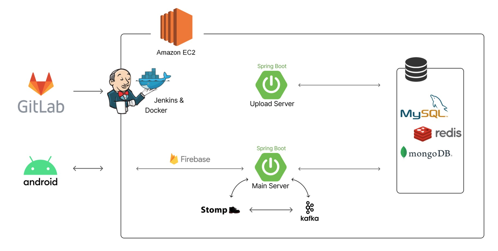
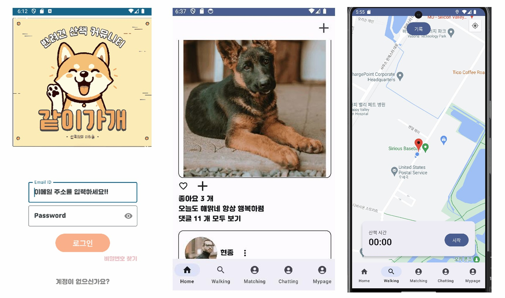

김현종
Backend Developer
About Me
안녕하세요, 변화의 중심에 있고 싶은 백엔드 개발자 김현종입니다. 저는 기술을 통해 사람들의 일상을 더 편리하게 만드는 것을 목표로 합니다.
객체지향 설계에 대해 깊은 관심을 가지고 있으며, 이를 바탕으로 효율적이고 확장 가능한 서버 시스템을 구축하는 데 주력하고 있습니다. 새로운 기술을 학습하고 적용하는 것을 즐기며, 특히 대규모 데이터 처리에 관심이 많습니다.
팀과의 협업을 통해 더 나은 솔루션을 만들어내는 과정에서 큰 보람을 느낍니다. 효과적인 의사소통과 지식 공유를 통해 팀 전체의 성장에 기여하고자 노력합니다.
제가 참여한 서비스가 많은 사람들의 불편함을 해소하고, 그들의 삶에 긍정적인 변화를 가져다주는 것이 제 꿈입니다. 이를 위해 끊임없이 학습하고 성장하며, 더 나은 개발자가 되기 위해 노력하고 있습니다.
연락처
교육
- 우아한테크캠프 7기: 2024.06 ~ 2024.08
- 삼성청년SW아카데미(SSAFY): 2023.01 ~ 2023.12
- 전남대학교 전기공학과: 2019.03 ~ 2023.02
기술 스택
Backend
JAVA
Spring Boot
Spring Security
Spring Data JPA
QueryDSL
Database
MySQL
MongoDB
Redis
DevOps & Tools
Docker
AWS
Kafka
프로젝트
기간: 2023-07-04 ~ 2023-08-18
프로젝트 설명
공유오피스 등을 대상으로 해 서로 함께 주문하여 배달비를 아낄 수 있는 서비스입니다. 통신이 가능한 IoT 기기인 box 및 주문할 가게와 연동된 채팅방을 생성해 메뉴를 선택하고 주문 후 box에서 배달된 음식을 찾아갑니다.
담당 업무
- 채팅방 서버 구현
- IoT기기와 통신을 위한 서비스 구현
- Stomp over WebSocket을 이용한 실시간 채팅 시스템 개발
- Kafka를 활용한 메시징 시스템 구축
- MongoDB를 이용한 채팅 내역 관리 시스템 개발
사용 기술
- Java 17, Spring Boot 3.0.8, Spring Data JPA, Spring Security, JWT
- Redis, Kafka, MongoDB, MySQL
- Docker, AWS Lightsail, Jenkins, Nginx


기간: 2023-10-09 ~ 2023-11-17
프로젝트 설명
반려인구 증가 속 반려견의 성향에 맞는 산책친구를 찾을 수 있는 커뮤니티 서비스입니다. 반려견과 함께 반려견의 성향에 맞는 친구를 만들어 주고 함께 산책하며 추억을 공유할 수 있습니다.
담당 업무
- Spring Webflux를 이용한 비동기 업로드 서버 구현
- 매칭 서버 및 화면 구현
- GPS 트랙킹 서버 및 화면 구현
- MongoDB를 활용한 GPS 데이터 저장 및 처리
- 하버사인 공식을 이용한 근처 사용자 매칭 알고리즘 구현
사용 기술
- OpenJDK 11, Spring Boot 2.7.14, Spring Webflux, Spring Data JPA, Spring Security
- Kafka, MongoDB, MySQL
- Docker, AWS Lightsail, Jenkins, Nginx

